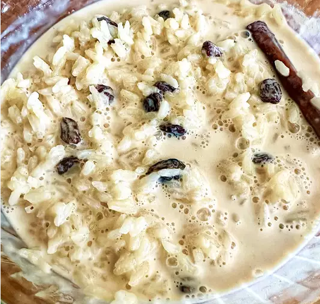

Arroz con Leche

This Arroz con Leche is the Cuban version of rice pudding. It's richer and sweeter than regular rice pudding.
Being Cuban myself, I prefer this version of this delicious dessert to any other.
Before serving,sprinkle with cinnamon or garnish with a cinnamon stick, for flair.
Ingradients
- 2 1/4 cups of water
- 1 1/2 cups of short grain rice
- 1 (1/4 inch x3 inch) strip lime peel
- 1/2 cup water
- 1 cinnamon stick
- 2 tablespoons anise seed,crushed
- 1 (12 ounce) can condensed milk
- 1 (14 ounce) can condensed milk
- 1 tablespoons vanilla extract
- 1/4 teaspoon salt
- 3/4 cup raisins (optional)
Directions
- Combine 2 1/4 cups of water, rice, and lime peel in a saucepan.
- Bring to a boil over medium-high heat, then reduce heat to medium-low, cover, and simmer for 20 minutes until the rice is tender.
- While the rice is cooking, combine 1/2 cup of water, the cinnamon stick, and anise in another saucepan over medium-high heat.
- Bring mixture to a low boil for 3 minutes, then remove saucepan from stove.
- Strain flavored water into a bowl and set aside, discarding cinnamon stick and anise pieces.
- After rice has simmered for 20 minutes, carefully remove the lime peel with a slotted spoon, and over low heat, gradually stir evaporated milk and condensed milk into the rice.
- Mix in the cinnamon and anise-flavored water, vanilla, and salt. Add raisins, if desired. Continue to stir until the mixture thickens, about 7 to 10 minutes.
- If the pudding is too watery after 10 minutes, turn up heat to medium-low and stir continuously.
- When pudding reaches desired consistency, remove from heat and pour into individual dishes, or a large bowl. Store in the refrigerator until ready to serve.
Home